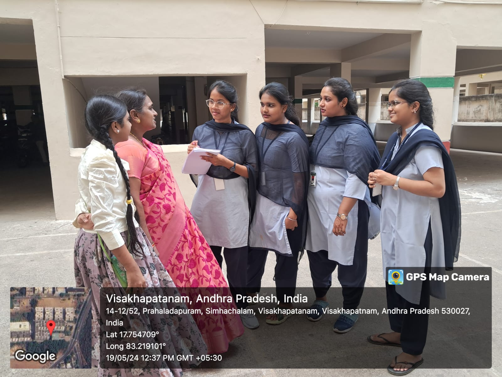
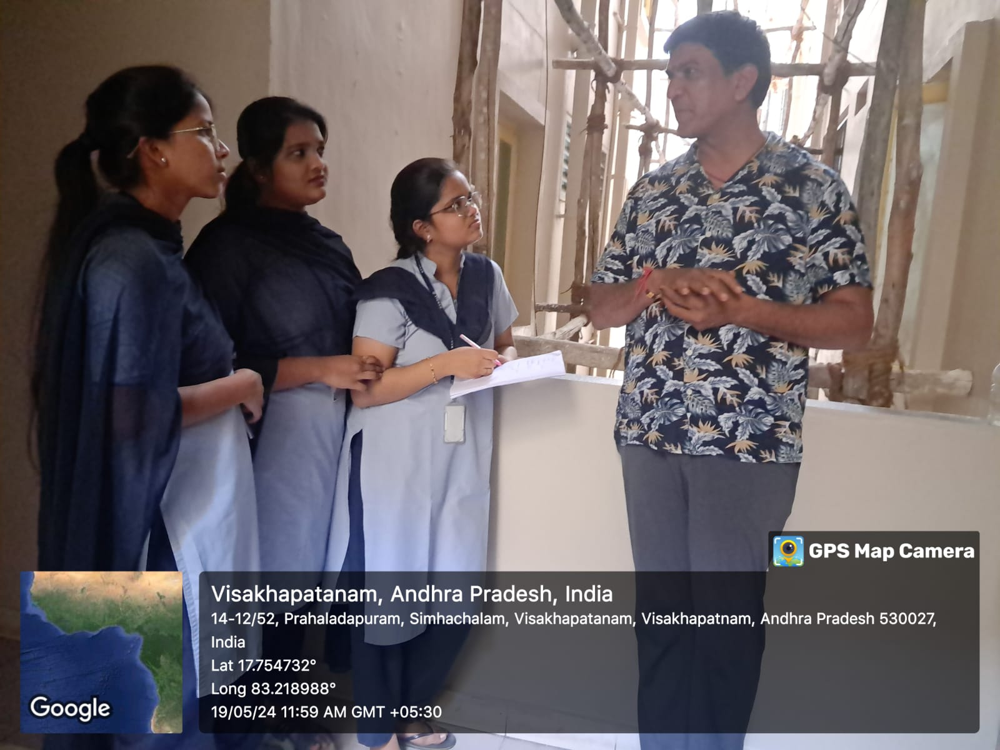
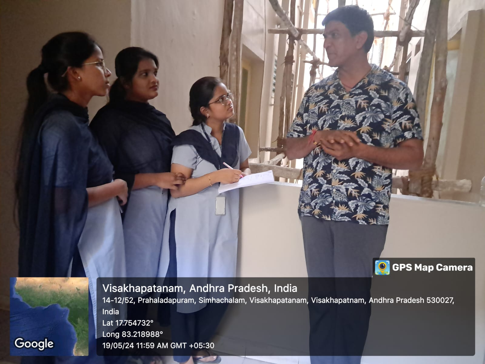
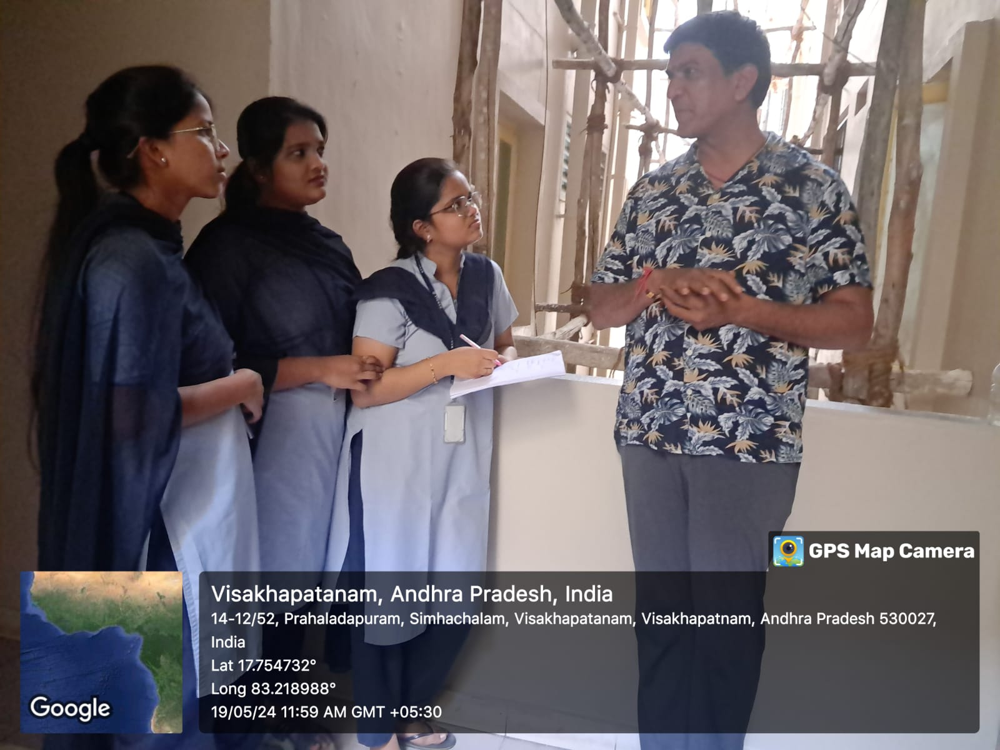

CONTENTS
- Introduction
- Abstract
- Problem Solving
- Report
- Solution
- Conclusion
INTRODUCTION
Every year, millions of medications go unused and are improperly disposed of , posing significant risks to health and environment . Proper disposal of medications is crucial to prevent accidental poisoning , misuse , and environmental contamination . Medicines are very important for enhancing the quality of life and managing disease conditions .Many medicines have expiry date and should not be used by patients after that date .Unused and leftover medicines can be stored by many people in their places of residence and houses. There is a lack of knowledge about safe and proper medicine disposal practices among consumers.When medications are not disposed properly , they can end up damaging human health, wildlife health and ecosystem balance . By using an organized method of collecting expired medications, the benefits were possible .The goal of this project is to reduce the risk of accidental poisoning and Drug misuse .This ensures compliance with health and safety regulations
ABSTRACT
Expired or unused medicines are potentially toxic substances that should be managed effectively to avoid accumulation of potentially toxic pharmaceuticals in the environment. For years, several countries have been concerned about how to dispose of unused pharmaceuticals that can endanger human health and the environment. A socio economic survey carried out at Sai Priya Heights, Prahaladapuram, Simhachalam. The Aim of the study is to develop awareness about safe disposal of medications. There is a lack of uniform and nationwide guidance on how patients should safely dispose their leftover medications.
PROBLEM IDENTIFICATION
The Problem is identified that there is a lack of knowledge on how to dispose expired, unwanted and unused medications among our participant population. Some studies showed that most patients stored their medications improperly at home that may lead to undesirable effects or unintentional risks link improper self –medication and accidental overdose .Expired medications, as reported were either flushed down in sink, drain or thrown into the trash .If Drugs are carelessly stored or disposed, there is a likelihood of another person obtaining and consuming them leading to serious consequences and health threats.
REPORT

 


As part of a socioeconomic survey, a small group of male participants aged between 45 and 65 were interviewed. These individuals reported taking daily medications for conditions such as diabetes, blood pressure, and thyroid issues. Alongside inquiries about their dietary habits, we also asked about their methods for disposing of unused or expired medications. Interestingly, two respondents mentioned that they disposed of their medications by simply throwing them into the trash can. In contrast, another participant stated that they preferred to crush the tablets and dispose of them in the soil
In a survey about how people get rid of old medicines, a doctor replied that it's really important to throw them away safely. They could remind everyone that just tossing them in the trash or flushing them down the toilet can be harmful. He suggested some safer ways to get rid of them, like taking them back to the pharmacy or mixing them with something gross before throwing them out. The doctor also recommend talking to them or another healthcare professional about any unused medicines to make sure they're used safely
SOLUTION
In addressing the effective management of unused medicines, it's crucial to adhere to a set of key steps aimed at ensuring both safety and environmental protection. The first step involves checking the label of the medication for any specific disposal instructions provided by the manufacturer. These instructions typically offer guidance on the safest and most environmentally responsible methods of disposal. However, in cases where no specific instructions are provided, alternative methods must be considered. One such alternative is to inquire about the availability of a medicine take-back program within the community. These programs, often offered by local pharmacies or waste facilities, provide a convenient and secure means of disposing of unused medications. By utilizing these programs, individuals can ensure that their medications are handled and disposed of properly, minimizing the risk of unintended harm. In instances where a take-back program is not available, other disposal methods can be employed. One recommended approach is to dispose of the medications in household trash. However, to mitigate the risk of accidental ingestion by children or pets, it's advisable to mix the medications with undesirable substances such as used coffee grounds or dirt. This makes the medications less appealing and accessible to curious individuals, reducing the likelihood of accidental consumption. We can perform another alternative method for medicines which do not have harmful chemicals

if the medications do not contain any harmful chemicals, diluting them with water can be an effective strategy to minimize their impact on the environment. This diluted solution can then be safely added to a compost pile or used to nourish the soil around plants, including those used in homeopathy treatments. By repurposing the medications in this manner, individuals can contribute to sustainable practices while ensuring safe disposal
CONCLUSION
In conclusion, the imperative for establishing uniform guidelines for the safe disposal of unused medications is evident. These guidelines must cover a spectrum of disposal methods, prioritizing safety and environmental preservation. Incorporating various disposal options ensures accessibility and accommodates diverse circumstances, promoting responsible medication management. Furthermore, it's crucial to underscore the significance of both safety and environmental stewardship in these guidelines. By emphasizing these aspects, individuals are encouraged to adopt practices that not only safeguard their well-being but also protect the environment from potential harm posed by improper disposal. Together, we can help people and the planet. By teaching, spreading awareness, and getting involved, we can make disposing of medicine safer. This means we can lower the chances of problems that come from getting rid of medicine incorrectly. It's our job to take care of our health and our environment for the future
PROJECT MEMBERS:
- K. SOWBHAGYA VALLI(22NM1A4224)
- T. SRUJANA(22NM1A4247)
- V. SRI HARSHINI(22NM1A4251)
- V. PRANEETHA(22NM1A4255)
GUIDE:
- V.SUNEETHA MAM